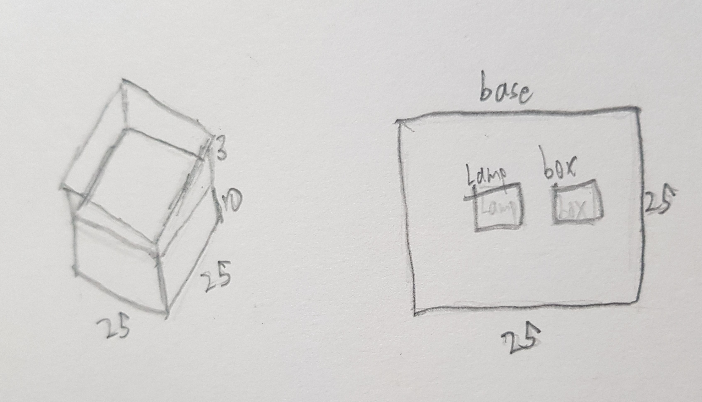
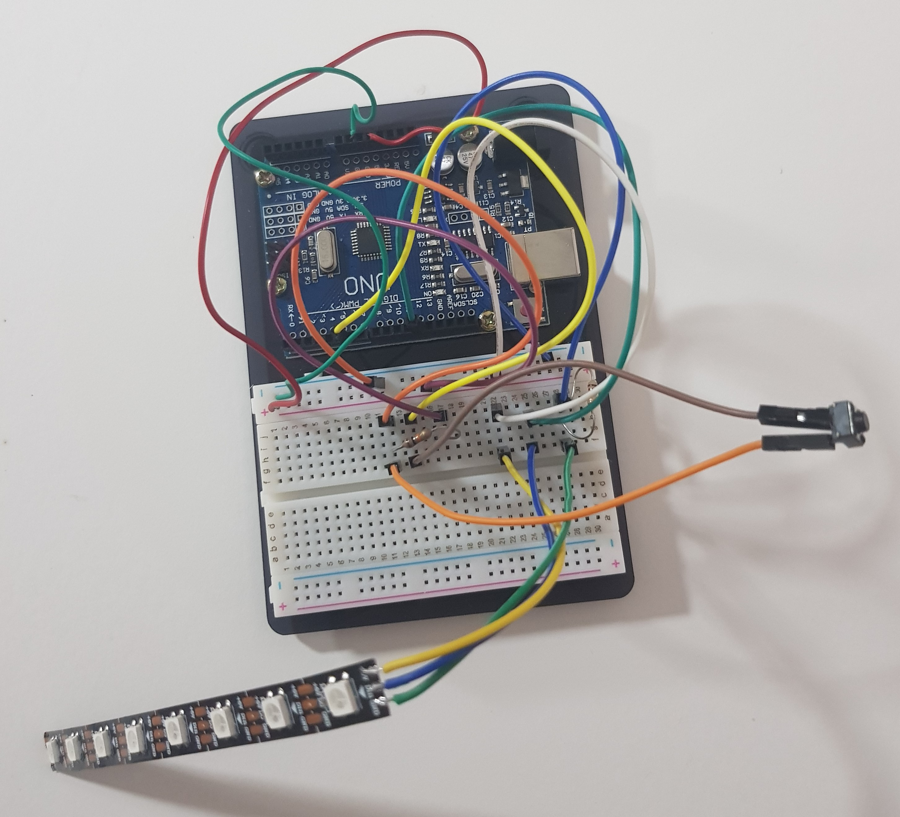
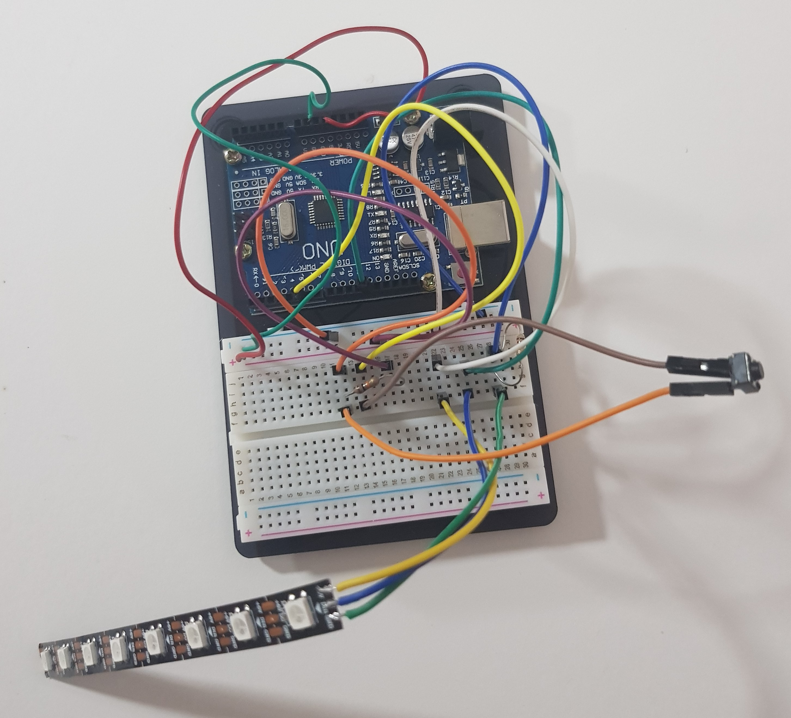

Project
The project I intend to build is a mood lamp but with a large upper base with fence to showcase figures.
the base would be around 15/15cm, height of fence may be around 3cm. Distance from lower base to upper base is 8cm.
It is supposed to serve as a stand for the item that one put on top, and it will light up when the button is pressed. The first sequence of the light is a glowing a dimming light of red, green then blue. The second sequence is a pink colour light without flashes, and the last sequence is no light, which is also the default colour.
I have created my sketch of a rough idea on my RGB Figure Stand, which is shown below.
{kind=link}
There are other sites I used as a reference to my project. Below are links to the sites that I referred to:
Things I am going to do differently from others
- Make a top base and use it to showcase things with a cool lamp shining
- a fence on top to make sure that the figure will not drop out from the lamp.
Step 1: Materials Needed
Here are the materials I used to make the RGB Figure Stand.
- Ardunio UNO
- Jumper wires
- Push button
- Breadboard
- Neopixel Strip (8 LEDs)
- Plywood
- acrylic plastic (translucent)
- Filament (for 3D printing)
Step 2: Circuit Design
My second step is to do the circuit online first on TinkerCAD then transfer to the breadboard. Do up the circuit online so that you do not break any of the components that you use, as a way to save time and resources. Below are some pointers and pictures of the circuit.
- push button at pin 6
- Neopixel strip at pin 12
 

{kind=link}
Step 3:Ardunio Code
My third step is to do up the ardunio code that is for the RGB light to go for the sequence I want.
#include (FastLED.h) //replace () with <>
#define NUM_LEDS 8 //num_pixels
CRGB leds[NUM_LEDS];
#define PIN 12
const int SW = 5;
int state; // current state system is in
int lastreading; // current SW state
void setup() {
// setup Uno
Serial.begin(4800);
pinMode(SW, INPUT); // when SW is not pressed
state = -1; // start with state 0
FastLED.addLeds(leds, 8);
// initialise variables
}
void setPixel(int Pixel, byte red, byte green, byte blue)
#ifdef ADAFRUIT_NEOPIXEL_H
// NeoPixel
strip.setPixelColor(Pixel, strip.Color(red, green, blue));
#endif
#ifndef ADAFRUIT_NEOPIXEL_H
// FastLED
leds[Pixel].r = red;
leds[Pixel].g = green;
leds[Pixel].b = blue;
#endif
}
void setAll(byte red, byte green, byte blue) {
for (int i = 0; i < NUM_LEDS; i++ ) {
setPixel(i, red, green, blue);
}
showStrip();
}
void showStrip() {
#ifdef ADAFRUIT_NEOPIXEL_H
// NeoPixel
strip.show();
#endif
#ifndef ADAFRUIT_NEOPIXEL_H
// FastLED
FastLED.show();
#endif
}
int reading = -1;
int color[3] = {0, 0, 0};
int fader[2] = {0, 1}; // First Element = Index of colour, Second Element = fade in(1)/out(-1)
void color_update(){
color[fader[0]] += fader[1];
if(color[fader[0]] == 255)
{
fader[1] *= -1;
}
if(color[fader[0]] == 0 and fader[1] == -1)
{
fader[0]++;
fader[1] *= -1;
}
if(fader[0] == 3)
{
fader[0] = 0;
}
setAll(color[0], color[1], color[2]);
showStrip();
}
void loop()
{
reading = digitalRead(SW);
Serial.println(state);
if(reading == LOW and reading != lastreading)
{
state += 1;
if(state == 3)
{
state = 0;
}
}
switch (state){
case 0:
color_update();
break;
case 1:
setAll(212, 30, 90);
showStrip();
delay(10);
break;
default:
setAll(0, 0 ,0);
showStrip();
}
delay(10);
lastreading = reading;
}
Step 4: Lazer Cut Parts
Next is to lazer cut the Structure for the RGB Figure Stand. For this part, I used acrylic plastic and plywood. Below are some pointers on the measurements and also a view of the stand I made in Fusion 360.
- the top base and the fences on top are in acrylic plastic
- the rest of the parts in this are in plywood
- length = breadth = 150mm
- thickness of acrylic plastic & Plywood = 3mm
- height of the side piece of plywood = 80mm
- height of fence is 10mm
- the amount of fingers for height & base = 3
- the fence fingers = the fingers for the top part of the sides
- circle hole at the front = 20mm in diameter
- square hole at the front = 5mm/5mm
{kind=link}
{kind=link}
Step 5: 3D Printed Part
Now, we 3D print a LED stand which will help to hold the LED strip in place. The 3D printed part can be in any colour. Below are some pointers on the measurements and also a view of the LED stand I made in Fusion 360.
- thickness = 3mm
- height of sides = 80mm
- length of sides = 15mm, thinner sides = 3mm
- length of the top part = 130mm
- breadth of top part = length of sides
- thickness of the side fences = 1mm
- height of side fences = 3mm
- height of the middle holder = down by 3mm
{kind=link}
Step 6: Assemble the parts
The last step is to assemble the parts and that will be the finished product. Below are some pointers to take note and pictures and video of my finished product.
- the frame of the stand is a perfect fit, may be hard to fit the parts together
- there are still some imperfections in the 3D printed part
{kind=link}
{kind=link}
What is successful
- the idea of the stand and the fence
- the ardunio code as it works
- the hardware for the ardunio and button works
What can be done better
- the lazer cut parts can be cut more accurately so that the parts can fit in nicely
- a small gap can be included for the top part where the acrylic and the wood intersect as it is not a perfect smooth fit
- the 3D printed part can be more accurate so that it is fitted nicely
- a base can be placed below the Neopixel strip so that wires can not be seen